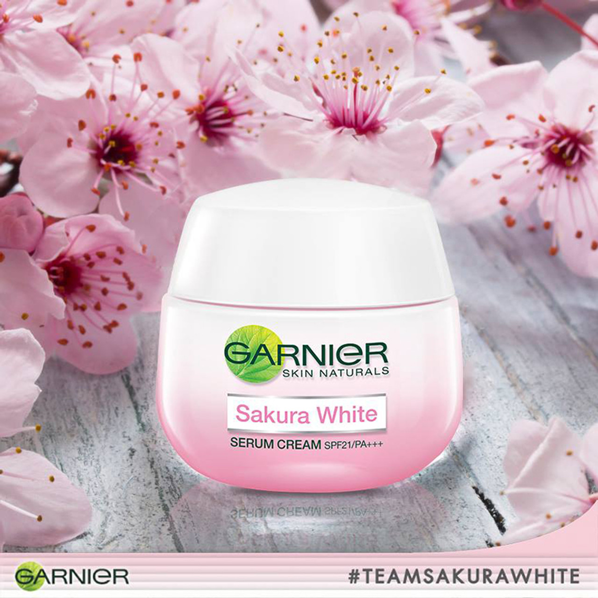

Garnier Sakura White Day SPF21 PA+++

ครีมบำรุงผิวหน้าที่ช่วยให้ผิวขาวใสแบบอมชมพูตามชื่อเค้าเลย จุดเด่นคือมีการนำสารสกัดจากดอกซากุระญี่ปุ่นมาเป็นส่วนผสม
และมีวิตามินซี วิตามินบี 3 ที่ช่วยเรื่องความขาวด้วย ใช้ทาตอนเช้าก่อนแต่งหน้าถือว่าเวิร์คเพราะมีสารกันแดด
และเป็นเหมือนเบสเมคอัพไปในตัวด้วยค่ะ เค้าว่าใช้แล้วขาวขึ้นจริงแต่ค่อนข้างแรง อาจจะไม่เหมาะกับคนผิวแพ้ง่ายนะคะ
เนื้อสัมผัส : เนื้อครีมสีขาวอมชมพูข้น ๆ นิดหน่อย คนผิวมันอาจจะไม่ชอบ มีกลิ่นหอมดอกไม้อ่อน ๆ
เหมาะกับ : สาวผิวธรรมดาที่หน้าหมองคล้ำไปจนถึงผิวแห้ง

ย้อนกลับ
และมีวิตามินซี วิตามินบี 3 ที่ช่วยเรื่องความขาวด้วย ใช้ทาตอนเช้าก่อนแต่งหน้าถือว่าเวิร์คเพราะมีสารกันแดด
และเป็นเหมือนเบสเมคอัพไปในตัวด้วยค่ะ เค้าว่าใช้แล้วขาวขึ้นจริงแต่ค่อนข้างแรง อาจจะไม่เหมาะกับคนผิวแพ้ง่ายนะคะ
เนื้อสัมผัส : เนื้อครีมสีขาวอมชมพูข้น ๆ นิดหน่อย คนผิวมันอาจจะไม่ชอบ มีกลิ่นหอมดอกไม้อ่อน ๆ
เหมาะกับ : สาวผิวธรรมดาที่หน้าหมองคล้ำไปจนถึงผิวแห้ง